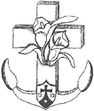
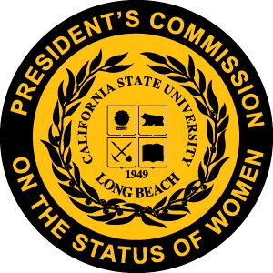
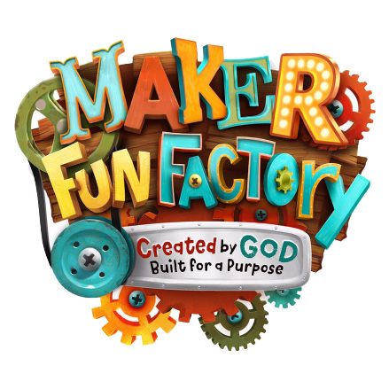
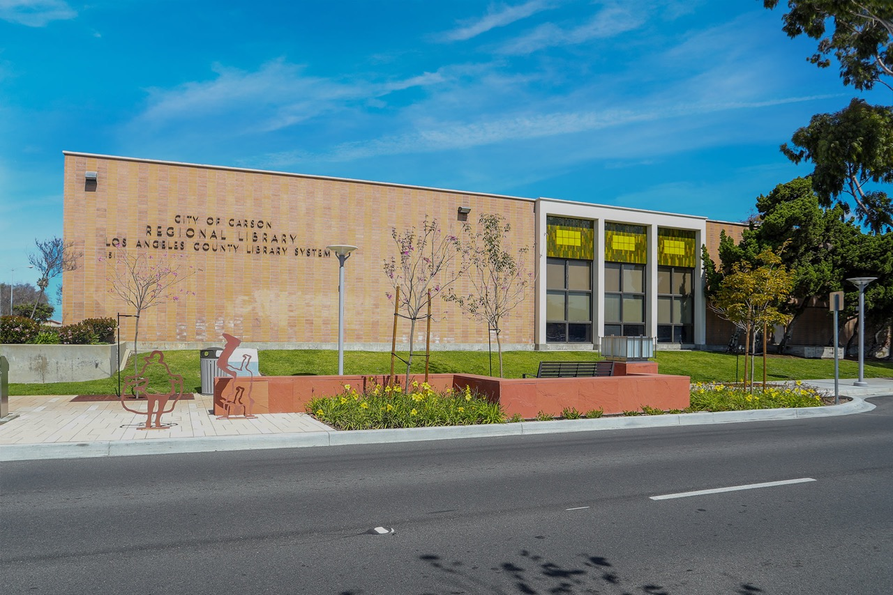
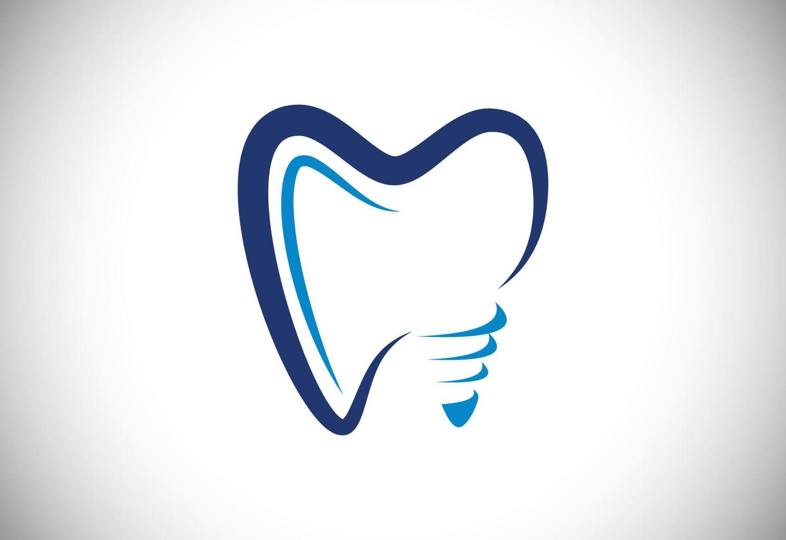

Gabriel Villanueva
Computer Science Student at California State University, Long Beach
About Me
My name is Gabriel Villanueva and I am from Southern California. As of June 11, 2023,
I am a third year Computer Science major studying at California State
University, Long Beach. I plan on graduating in the Spring of 2025. I am doing a lot of
self-studying and I aim to have an internship before I graduate. Right now, I am
trying to figure out which fields in Computer Science I would like to pursue in.
Right now, I am thinking about Machine Learning, App Development, Web Development,
Databases, Operating Systems, and Ethical Hacking. My goal for the next two years,
2023 and 2024, is to keep learning and gain experience in various fields to figure
out which field is right for me.
My Education

St. Philomena Catholic School: 2007-2016
Hawthorne Math and Science Academy: 2016-2017
Mary Star of the Sea High School: 2017-2020

California State University, Long Beach: 2020-2025
My Work Experience/Volunteering

Summer Day Camp Assistant Counselor: 2017
-
Supervised and incorporated kids into educating and fun activities.
- Teaching dance movements to camp theme.
- Creating art
- Teaching songs
- Playing games
- Collaborated with other camp counselors and assistants to create an enjoyable experience for the kids.
- Calmly and patiently handled disorderly kids with the appropriate amount of firmness and compassion.

Librarian Assistant: 2017-2018
- Organized books that have been just returned to the library.
- Cleaning up and tidying rooms that have been used by children to play and read.
- Took count of and organized supplies.
 Dental Assistant: 2022-Present
- Worked front office to communicate with old and new patients.
- Organized files of patients.
- Checked the validity of patients' insurance.
- Talked on the phone with patients to answer questions and to remind and schedule appointments.
- Assisted the dentist during dental procedures (suctioning, handing instruments/items, etc.).
- Utilized an ultrasonic cleaner and an autoclave to sterilize dental equipment.
- Cleaned and prepared rooms for dental operations.
- Multitasking all of the above effectively.
Programming Experience
- Have programmed much with Python, Java, C, C++.
- Basic understanding of the basic and commonly known algorithms and data structures.
- Used SQLAlchemy to design a Postgresql 13 database.
- Basic understanding of SQL queries.
- Used PyMongo to design a MongoDB database.
Other